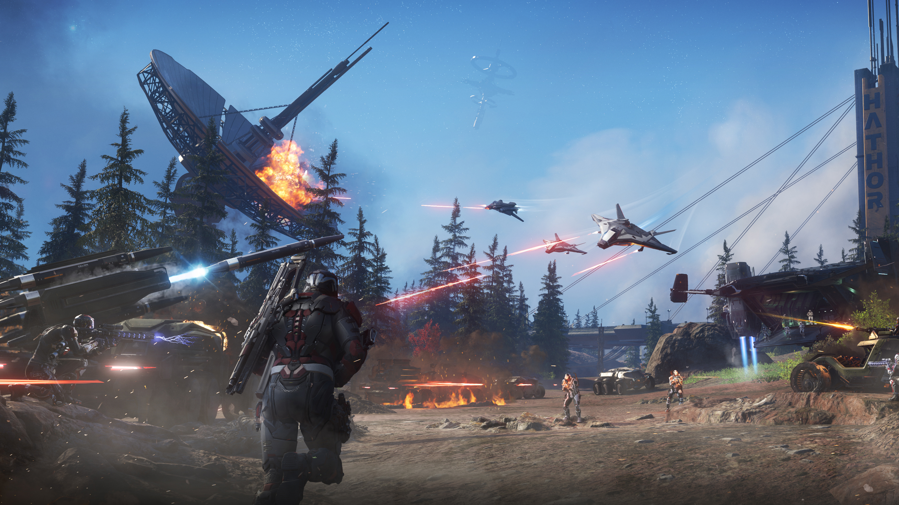
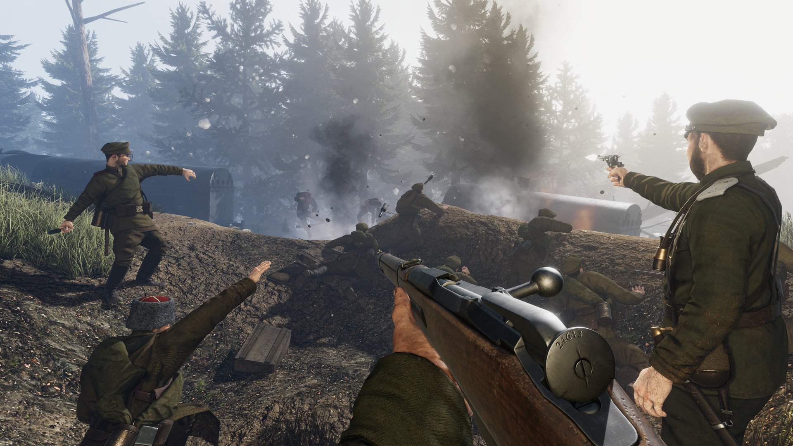

While I don't do HTML or CSS, I play my favorite video games and board games.
some of my favorite games are: Star Citizen, Warhammer 40k, Tannenberg.
Warhammer 40k
Warhammer 40,000 is a miniature wargame produced by Games Workshop. It is the most popular miniature wargame in the world.
Star Citizen
Star Citizen is an in-development multiplayer, space trading and combat simulation game.

Tannenberg
Tannenberg is a squad-based multiplayer first-person shooter video game set durin WW1.
